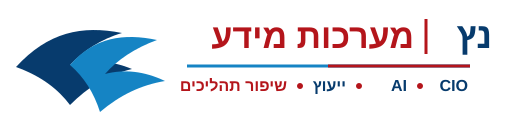

ראשי
מה אנחנו עושים
איך אנחנו עובדים
CIO במיקור חוץ
אודות
צור קשר
דברו איתנו ב־WhatsApp
איך אנחנו עובדים
אתם ממשיכים לנהל את העסק. אנחנו לוקחים אחריות על השיפור.
1
מזהים כאב
2
לומדים תהליך
3
מאפיינים פתרון
4
בוחרים טכנולוגיה
5
מטמיעים
6
מודדים ROI
המטרה: שינוי אמיתי בלי להסיט את הצוותים שלכם מהשוטף.